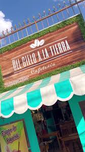
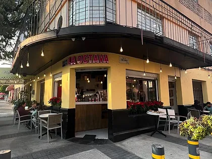

¿Estudias en ESIME Zacatenco o alguna otra unidad academica en dicha zona y te gustaria conocer lugares bonitos para disfrutar de un buen cafe y relajarte? Aqui te mostramos algunas sugerencias
| Cafeteria | Ubicacion | Horario | Sitio web | |
La octava | Av. Montevideo 377, Lindavista Sur, Gustavo A. Madero, 07300 Ciudad de México, CDMX | De 7:00 a.m a 10:00 p.m de Lunes a Viernes y de 8:00 a.m a 10:00 p.m en Domingos | La octava |
|---|---|---|---|---|
|
Nativos | Av. Wilfrido Massieu 278, Planetario Lindavista, Gustavo A. Madero, 07739 Ciudad de México, CDMX | De 7:00 a.m a 8:00 p.m entre semana y de 7:30 a 8:00 p.m en fines de semana | Nativos |  | Del Cielo a la Tierra | Eten 689, Lindavista, Gustavo A. Madero, 07300 Ciudad de México, CDMX | De 9:40 a.m a 8 p.m los Lunes, Miercoles y Jueves; de 9:40 a.m a 8:30 p.m los Viernes; de 9:40 a 6:00 p.m los Sabados y de 9:40 a.m a 3:00 p.m los Domingos | Del Cielo A La Tierra |
|
Starbucks Torres Lindavista | Av. Miguel Othón de Mendizábal Ote. 343, Nueva Industrial Vallejo, Gustavo A. Madero, 07700 Ciudad de México, CDMX | De 7:00 a.m a 10:00 p.m todos los dias | Starbucks Torres Lindavista |
La Octava es una cafetería que se ha ganado un lugar especial en el corazón de sus clientes, no solo por la calidad de su café, sino también por su variada oferta gastronómica. Su menú es extenso y está diseñado para satisfacer todos los gustos: desde desayunos completos y saludables, hasta deliciosas pizzas que se preparan con ingredientes frescos y de calidad. Además, los amantes del buen café encontrarán aquí una amplia selección de bebidas, desde espresso hasta preparaciones más creativas y especiales. El ambiente acogedor y los escritos decorativos en las paredes añaden un toque único, invitando a los visitantes a relajarse y disfrutar de una experiencia completa. Ya sea para una mañana tranquila o una tarde en buena compañía, La Octava se presenta como un excelente lugar para disfrutar de una comida deliciosa y un café perfecto.
¿Deseas conocer su ubicación en Google Maps?
Si ya has visitado esta cafetería y te gustaría compartir tu experiencia, da click en el siguiente enlace y compártela
¡Comparte tu experiencia!Nativos es una cafetería que destaca por su ambiente acogedor y su excelente oferta gastronómica. Su café, de tueste artesanal, es sin duda lo mejor del lugar: suave, aromático y con un sabor único que cautiva desde el primer sorbo. Acompañado de sus deliciosos panes de la casa, frescos y perfectamente horneados, convierte cada visita en una experiencia placentera. Los panes, ya sea con nuez, chocolate o simple, tienen una textura suave por dentro y crujiente por fuera, lo que los hace irresistibles. Ideal para quienes buscan un lugar tranquilo para disfrutar de un buen café y algo delicioso para acompañarlo.
¿Deseas conocer su ubicación en Google Maps?
Si ya has visitado esta cafetería y te gustaría compartir tu experiencia, da click en el siguiente enlace y compártela
¡Comparte tu experiencia!"Del Cielo a la Tierra" es una cafetería que cautiva no solo por su excelente oferta gastronómica, sino también por su cuidada decoración, que cambia según la temporada, creando un ambiente único y acogedor en cada visita. Ya sea con adornos florales en primavera o con toques rústicos y cálidos en invierno, el lugar invita a relajarse y disfrutar. Su menú también se adapta a las estaciones, ofreciendo opciones especiales que reflejan los sabores y colores de cada periodo del año. El ambiente es tranquilo y amigable, ideal para una tarde de café, lectura o conversación. Una experiencia completa que combina estética, sabor y confort.
¿Deseas conocer su ubicación en Google Maps?
Si ya has visitado esta cafetería y te gustaría compartir tu experiencia, da click en el siguiente enlace y compártela
¡Comparte tu experiencia!El Starbucks ubicado en Plaza Torres Lindavista es el lugar perfecto para disfrutar de un buen café en un ambiente relajado. Con su amplia terraza, ofrece un espacio al aire libre ideal para quienes buscan disfrutar de su bebida favorita mientras respiran aire fresco. El menú, que incluye los clásicos de Starbucks como el Caramel Macchiato, el Frappuccino y sus deliciosos pasteles, siempre cumple con las expectativas. La comodidad y la atención al cliente son excelentes, y el lugar tiene una vibra moderna y acogedora, convirtiéndolo en una excelente opción para un descanso en medio de un día ajetreado.
¿Deseas conocer su ubicación en Google Maps?
Si ya has visitado esta cafetería y te gustaría compartir tu experiencia, da click en el siguiente enlace y compártela
¡Comparte tu experiencia!